Next: Dimensionless transpiration condition
Up: Nondimensionalization
Previous: Mass and energy fluxes
Contents
Dimensionless field equations
The dimensionless equations of
continuity (2.6, 2.7),
motion (2.10),
and energy (2.16) are:
| 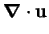 |
 |
 |
(2.52) |
| 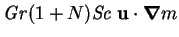 |
|
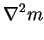 |
(2.53) |
| 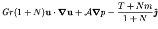 |
|
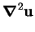 |
(2.54) |
| 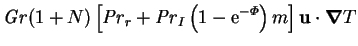 |
|
|
|
| 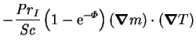 |
|
 |
(2.55) |
The dimensionless parameters appearing here are not all independent, since the
interdiffusion Prandtl number,
 , and the mass transfer rate factor,
, and the mass transfer rate factor,
 , only appear in the group
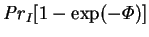.
The mass transfer rate factor,
however, enters separately in the transpiration boundary condition
(2.59), below.
, only appear in the group
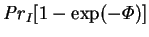.
The mass transfer rate factor,
however, enters separately in the transpiration boundary condition
(2.59), below.
The general roles of the various dimensionless parameters are as follows.
- Gr, the thermal Grashof number, indicates the strength of
buoyancy forces due to temperature variations. It is a measure of the
nonlinearity of the system. It has the same sign as the temperature difference
(for fluids expanding on heating), which is usually taken as positive.
 , the buoyancy ratio, indicates the strength of buoyancy
forces due to vapour concentration variations relative to the thermal
effects. Since buoyancy is usually the main driving force for the
flow (rather than the interfacial velocity),
the combined Grashof number,
, the buoyancy ratio, indicates the strength of buoyancy
forces due to vapour concentration variations relative to the thermal
effects. Since buoyancy is usually the main driving force for the
flow (rather than the interfacial velocity),
the combined Grashof number,
 , is a measure of the relative importance of advective and
diffusive (viscous) processes. Thus,
fluid motion instabilities are more likely at higher combined Grashof
numbers. can range over
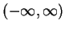.
, is a measure of the relative importance of advective and
diffusive (viscous) processes. Thus,
fluid motion instabilities are more likely at higher combined Grashof
numbers. can range over
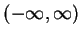.
- Sc, the Schmidt number, is the ratio of the diffusivities of
momentum and species, a necessarily positive quantity.
Its product with the combined Grashof number
indicates the relative importance of advection and diffusion for species
transport. Its numerical value for air-water vapour under normal conditions
is about 0.61 (Gebhart et al. 1988, p. 943).
- , the mass transfer rate factor, is central to all aspects of
mass transfer. It is the driving force for vapour transport,
and enters into the boundary conditions on velocity at the interfaces,
as well as the interdiffusion term in the energy equation.
-
 , the reference Prandtl number, is the ratio of the diffusivities
of momentum and heat, based on the (isobaric) specific heat capacity of the
mixture at the reference composition.
When mass transfer rate effects are small,
this approaches the usual single fluid Prandtl number,
and as such is proportional to the bulk
advection term in the energy equation. When the diffusion flux is comparable
to the mean mass flux, this interpretation must be modified. This quantity is
necessarily positive. Its numerical value for dry air at 275-310K
is 0.71 (Gebhart et al. 1988, p. 935).
, the reference Prandtl number, is the ratio of the diffusivities
of momentum and heat, based on the (isobaric) specific heat capacity of the
mixture at the reference composition.
When mass transfer rate effects are small,
this approaches the usual single fluid Prandtl number,
and as such is proportional to the bulk
advection term in the energy equation. When the diffusion flux is comparable
to the mean mass flux, this interpretation must be modified. This quantity is
necessarily positive. Its numerical value for dry air at 275-310K
is 0.71 (Gebhart et al. 1988, p. 935).
-
, the interdiffusion Prandtl number, has the
form of a Prandtl number, except that in the usual place of
a specific heat
it has the difference of the specific heats of the vapour and gas.
While this quantity is not necessarily positive (although
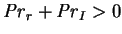),
it will often be so in practice since vapours are typically
distinguishable from gases by a greater molecular
complexity--this being related to the causes of the intermolecular
attractions responsible for their relatively high boiling
point. More complex molecules have more kinds of energy (e.g. rotational and
vibrational) and so higher specific heats (Jeans 1940, pp. 33-6, 275 f.).
This trend is somewhat offset by the fact that specific heat capacities are,
all else being equal, inversely proportional to molar mass (Jeans 1940,
pp. 35, 276). The alkanes form a counterexample: the
boiling points (at 1atm)
and specific heat capacities (at 298K and low pressure) of
methane, ethane and propane are 112, 185 and 231K and 2219, 1746 and
1669J.K.kg, respectively
(Dean, J. A. 1992, pp. 1.199 - 1.286, 6.19 - 6.33).
In our principal example, however, the rule is true: the specific heat
capacities of air and water vapour at 300K being 1003.5 and
1872.3J.kg.K. At infinite dilution, 300K and 1atm,
the value of the interdiffusion Prandtl number for air-water vapour is:
 |
 |
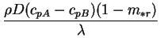 |
(2.56) |
| |
|
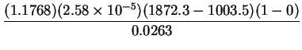 |
(2.57) |
| |
|
|
(2.58) |
The interdiffusion Prandtl number occurs twice in the energy
equation: in the interdiffusion term; and in the bulk advection term, where
it is proportional to the variation in the mixture specific heat.
As explained in §2.1.3, the variation of the
mixture specific heat and the interdiffusion effect are two aspects of
the same phenomenon. It is inconsistent to include one without the
other.
Including interdiffusion without variable mixture
specific heat in the bulk advection term introduces a term into the
energy flux divergence (the steady energy equation) which is dependent
on the temperature datum for enthalpy, which must be arbitrary. If the
mixture specific heat is treated as a constant in the flux divergence, a
spurious source term occurs.
This has not always been recognized in the literature, and is one of the
important features of the present model.
Next: Dimensionless transpiration condition
Up: Nondimensionalization
Previous: Mass and energy fluxes
Contents
Geordie McBain
2001-01-27